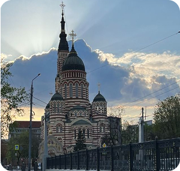

Annunciation Cathedral
01Annunciation Cathedral
About Annunciation Cathedral
Annunciation Cathedral is one of the most recognisable historical buildings in Kharkiv. Its red-and-white architecture and 80-metre bell tower make it very different from many other buildings in the city. It was built between 1888 and 1901, and the architect was Mykhailo Lovtsov.
This cathedral is very different from Derzhprom. You can see a big contrast between the huge grey building and the beautiful architecture with red stripes. I think it is really impressive that one city can have such different architecture. They were built only 27 years apart, and it takes about 20 minutes to walk from one to the other.
